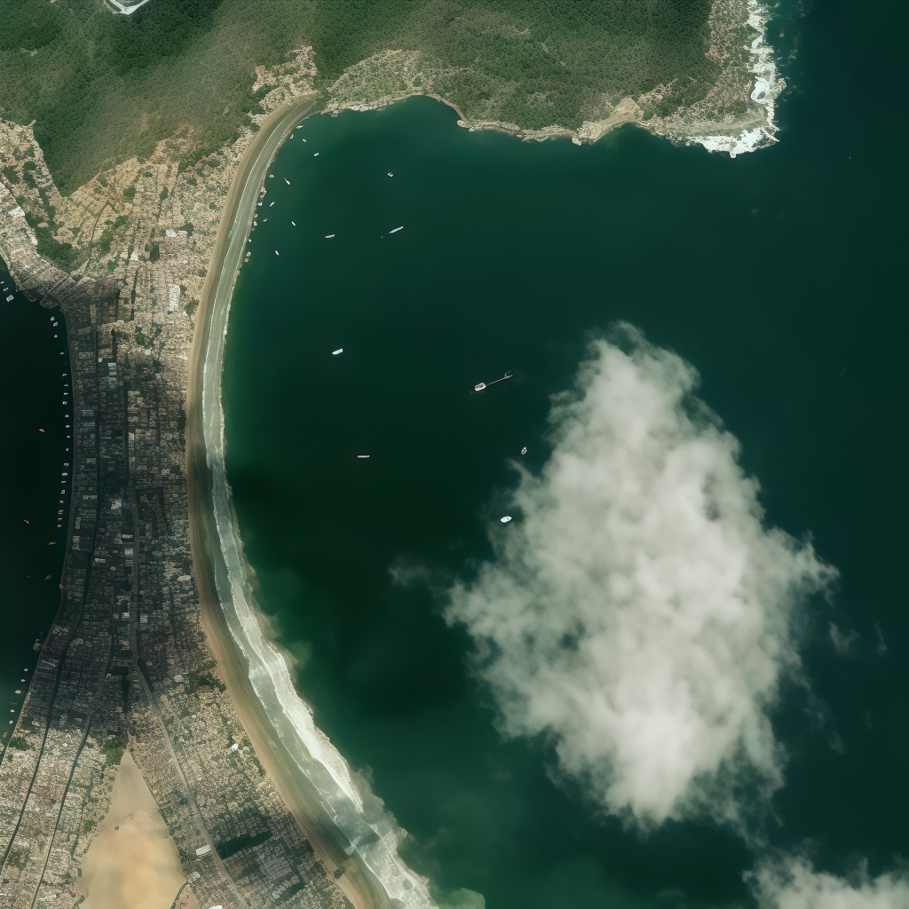
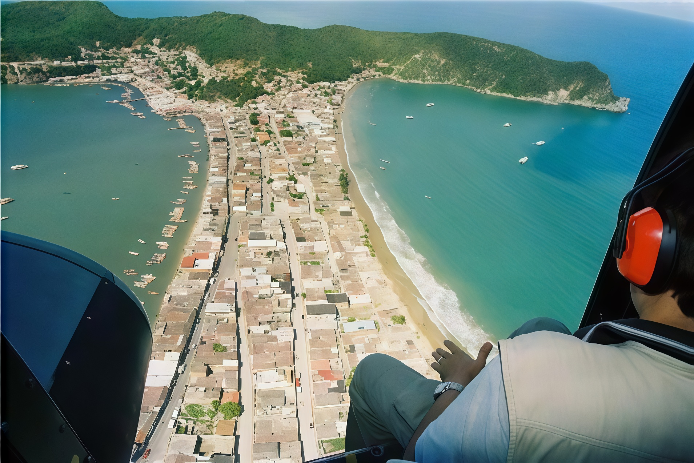
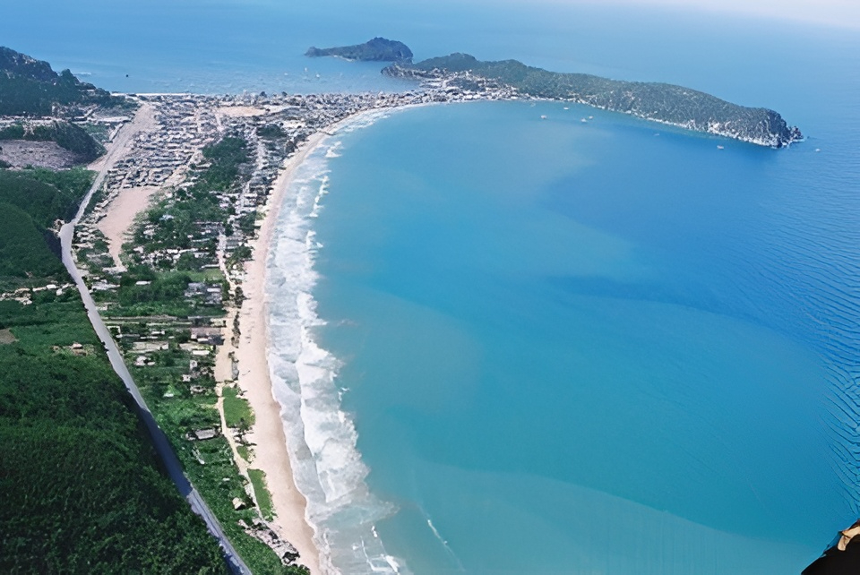

La historia de El Morro de Puerto Santo se enmarca dentro del proceso de conquista y colonización de la Provincia de Nueva Andalucía, impulsado por los españoles en su búsqueda de riquezas y nuevas tierras. Desde el siglo XVI, los indígenas de la región oriental ofrecieron una fuerte resistencia frente a los intentos de sometimiento, lo que dificultó el establecimiento definitivo de poblaciones europeas. No fue sino hasta la segunda mitad de ese siglo cuando la hegemonía hispánica logró consolidarse, teniendo como eje central a Cumaná, desde donde se organizó la expansión hacia otros territorios.
En 1590 se fundó el Valle de Puerto Santo con el propósito de servir como centro de abastecimiento y enlace estratégico entre la Región de Paria y la Isla de Margarita. Junto con Cumaná y Santa Fe, Puerto Santo fue uno de los principales núcleos que impulsaron el proceso de colonización en el actual estado Sucre. A pesar de la oposición indígena, los españoles lograron establecer una pequeña población que, para el siglo XVII, se convirtió en el centro económico, religioso y demográfico más importante de la Península de Paria.

El desarrollo del valle estuvo basado principalmente en la agricultura, destacándose pequeñas haciendas de cacao, caña de azúcar, café y otros cultivos menores. Estas actividades favorecieron el surgimiento de comunidades como Río Caribe y Unare, que funcionaron como puertos de salida de la producción agrícola hacia mercados como Margarita y Trinidad. La riqueza natural de la zona permitió un crecimiento progresivo, aunque limitado por las difíciles condiciones climáticas, la falta de infraestructura y la constante resistencia indígena.
Durante los siglos XVII y XVIII, la colonización avanzó de forma lenta e inestable. Los misioneros capuchinos y aragoneses desempeñaron un papel fundamental en la fundación de nuevos pueblos y en la organización social del territorio. La Iglesia no solo cumplía funciones religiosas, sino también administrativas, registrando nacimientos, matrimonios y defunciones, y consolidándose como la máxima autoridad local. Así, el Valle de Puerto Santo se convirtió en un punto unificador de poblaciones cercanas como Carúpano Arriba, Guayacán y Río Caribe.

La economía del valle también incluyó la pesca y la producción de pescado salado, actividad que requería abundante mano de obra indígena y posteriormente africana. El sistema colonial se caracterizó por una marcada estratificación social, donde el indígena y luego el negro fueron la base productiva. De este contacto surgió un importante proceso de mestizaje que marcó profundamente la identidad cultural de la región.
Aunque el valle prosperó en ciertos momentos, enfrentó abandono por parte del gobierno colonial, ataques de piratas y limitaciones económicas. El contrabando se convirtió en una alternativa para mantener activa la producción agrícola, especialmente de cacao y caña, exportados hacia Margarita y Trinidad. Sin embargo, con el auge de Río Caribe como centro exportador, Puerto Santo perdió protagonismo comercial. En este contexto, El Morro de Puerto Santo —ubicado al norte del valle— permanecía despoblado en sus inicios, pero forma parte esencial del proceso histórico que dio origen a la consolidación territorial y cultural de la Península de Paria.
